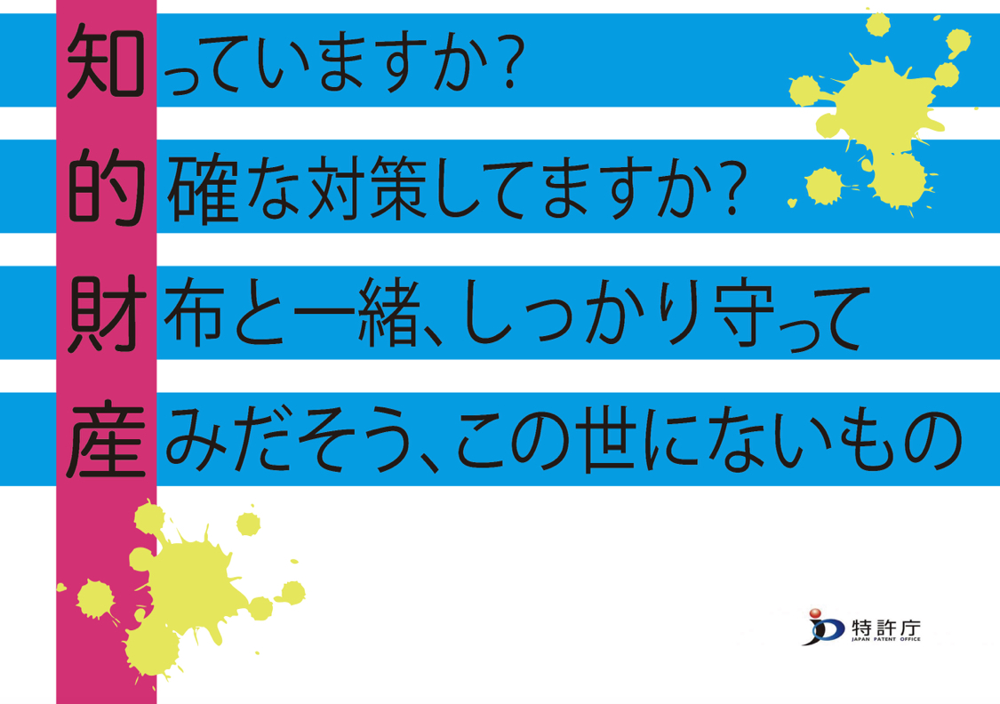

制作物の紹介
Session:1
課題：イラレでの名刺制作
作った時はAIの扱いが難しくて苦労しました、とりあえず綺麗に見せようとして真ん中で揃えたんですけど
ひらんけんの左右対象に甘えるな！！というのを聞いて「マジかーーーーーっっっ！！」と思わされましたね、はい
Session:2
知財特講での制作物
これは知財特講の授業で作成した『知的財産の保護を促す』事を目的として作ったキャッチコピー。
AIで作ったのですがうまいこと作れました、知財って難しい感じがするので親しみを持てるようにあいうえお作文にして
ポップに見えるように色も蛍光色を使用しました。ひらんけんに言われたことも意識して文字の間隔も調整しましたね。
Session:3
スタイルをあてる
スタイル（デザイン）を反映して、Pageを公開する